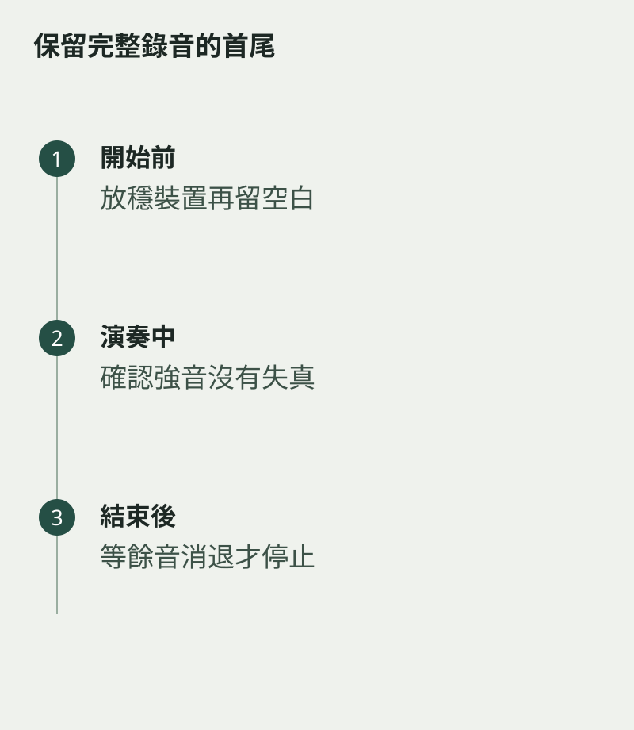

最後一槌敲完，手指立即按停止，錄音便在餘音中截斷。空靈鼓的結尾包含聲音慢慢消退的過程。錄製練習或演奏時，讓裝置多留一會兒，也給自己時間安靜地完成整段音樂。
開始之前同樣留一小段空白，避免按鍵聲和擺放裝置的聲音混進第一拍。這件事在錄音前便能安排妥當，不必留待後期處理。
先試最響的部分
錄一小段包含較強敲擊的樂句，聽有沒有失真或刺耳爆音。若有，先調整收音距離與裝置設定，再錄完整版本。不要以最細聲的一段測試後，就假設整首都適合。
把裝置放穩，避免與鼓共用容易傳震的表面。實際效果因環境而異，可以比較兩個位置，找出敲擊清楚、餘音自然的一個。

收音後也保持安靜
末音敲下後，雙手停穩，不要立刻移動鼓或說話。等餘音自然減弱才停止錄音。回聽時注意背景噪音是否在尾段特別明顯，必要時換一個安靜時段重試。
練習錄音不需追求毫無生活聲，但要保留你想聽的部分。當首尾都完整，這段聲音才真正成為可以回顧的小作品。尾音漸遠的幾秒，也是演奏的一部分，值得讓它走完自己的路。